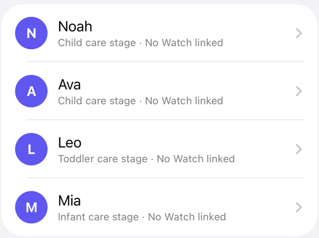

Guide
Tracking twins and siblings in one app.
With two or more children, the hard part is keeping their records apart while still seeing everything in one place. Here's how Tiny Logger does it.
Download on the App StoreHow it works
- A profile for each childEach child has their own feeds, sleep, nappies, growth, medicines, allergies, vaccinations and appointments. Nothing mixes.
- The right stage for eachSet each profile to the infant, toddler or child stage, and Tiny Logger shows only what fits. A newborn and an older sibling get different screens.
- Switch in a tapPick a child from the menu. Today, History and Trends all follow the child you choose.
- Share with the familyInvite a partner, grandparents or a nanny through private iCloud sharing, and choose what each person can see and edit.
- Separate summariesEach child's health summary and PDF export covers only that child, ready for their own appointments.
